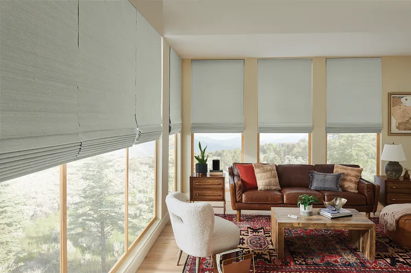
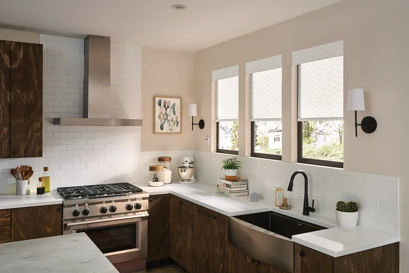
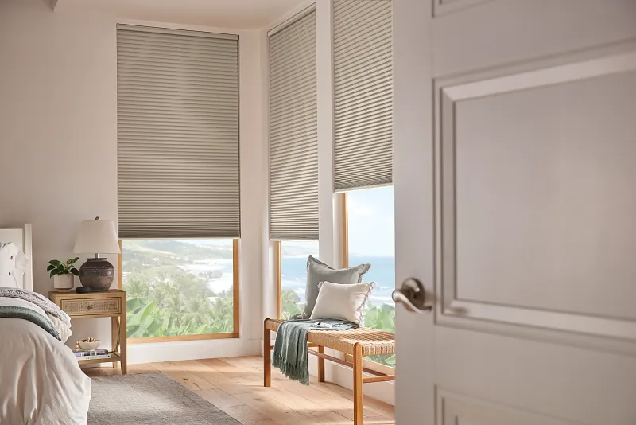

Top 5 Window Treatment Trends in Oklahoma City & Edmond
What You'll Learn in This Article:
- ✓ How natural textures and earth tones are transforming modern window treatments
- ✓ The impact of bold colors and patterns on interior design and personal style
- ✓ Smart home integration and automation features that enhance convenience and control
- ✓ Why sustainable and eco-conscious choices matter for energy efficiency and the environment
Call Brent & Edna today at 405-259-5599
for your window treatment questions.
Top Window Treatment Trends
The world of window treatments is constantly evolving, with new styles and innovations emerging every year. Staying current with the latest trends can not only enhance the look and feel of your home, but also improve your lifestyle. As a leading provider of high-quality window treatment solutions, Shaded In The Sun in Oklahoma City and Graber Blinds understand the importance of staying ahead of the curve. Looking for alternatives to traditional blinds? Let's explore five of the hottest window treatment trends currently making waves in Oklahoma City and Edmond.
Natural Textures
and Earth Tones

Natural materials are making a strong comeback, and this is reflected in the popularity of window treatments featuring natural textures and earth tones. Woven wood shades, crafted from materials like bamboo and reeds, add a touch of warmth and tranquility to any space. Graber Blinds offers a stunning collection of woven wood shades in a variety of natural hues, from soft creams to rich browns. These natural options are also featured in our guide to luxury window treatments.
Bold Colors
and Patterns

Say goodbye to bland window treatments! Bold colors and patterns are making a bold statement in homes across Oklahoma City and Edmond. From vibrant geometrics to playful florals, patterned window treatments add a touch of personality and energy to any room. Graber Blinds offers a wide range of designer fabrics for their roller shades, allowing you to choose from a dazzling array of colors and patterns to perfectly complement your unique style. Motorization can also be added to patterned roller shades, making it easy to adjust them for privacy and light control.
Smart Home
Integration

In today's increasingly connected world, smart home technology is more prevalent than ever before. And window treatments are no exception. Graber Blinds' PowerView® Motorization system seamlessly integrates with your smart home ecosystem, allowing you to control your shades with a simple touch of a button using your smartphone, tablet, or even your voice. Imagine adjusting your shades to your desired position with a simple voice command – the convenience is undeniable. Explore motorized window treatments for your home.
Sustainable and
Eco-Conscious Choices

As environmental awareness grows, so does the demand for sustainable and eco-conscious living. Shaded In The Sun in Edmond and Graber Blinds are committed to sustainability, offering a range of eco-friendly products and manufacturing processes. Cellular shades, for example, are an excellent choice for energy efficiency. These shades create an insulating barrier, helping to keep your home cooler in the summer and warmer in the winter, leading to reduced energy consumption and lower utility bills. Discover energy-saving shades for your home.
Increased Focus
on Privacy

In today's increasingly connected world, privacy is more important than ever. Homeowners are seeking window treatment solutions that offer effective light control and provide a sense of seclusion.
Graber Blinds offers a variety of options to enhance privacy in your home. Blackout shades are a popular choice, effectively blocking out all light and creating a dark and peaceful environment, ideal for bedrooms and home theaters. Understanding window shade opacities helps you choose the right level of privacy.
For those seeking more nuanced control, top-down/bottom-up shades offer a versatile solution. You can lower the top portion for privacy while still allowing natural light to enter from below. No matter your specific needs, Graber Blinds has the perfect solution to help you achieve the level of privacy you desire.
Conclusion
Staying abreast of the latest window treatment trends can significantly enhance the look and feel of your Oklahoma City or Edmond home. By incorporating these trends into your window treatment selection, you can create a space that is both stylish and functional. Understanding the value of quality window treatments helps you make informed decisions.
Related Articles
Latest Design Innovations
Discover the newest window treatment design trends and innovations that are shaping the industry this year.
Oklahoma Weather & Window Treatments
Choose the right window treatments for Oklahoma's extreme weather to maximize comfort and energy efficiency.
Advanced Lift Systems
Learn about the Graber UltraLite lift system and how its innovative engineering delivers superior performance and smooth operation.